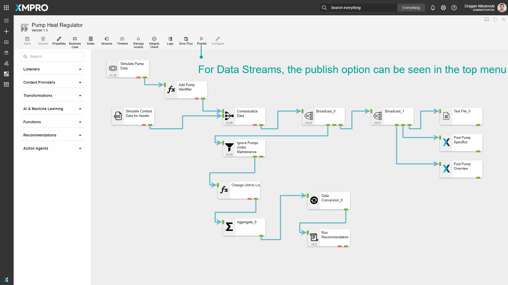
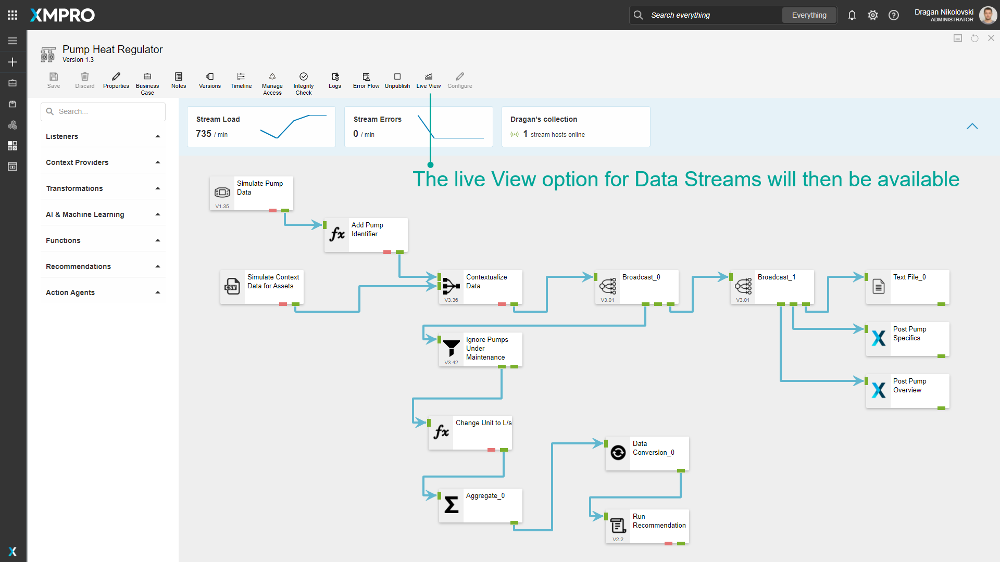
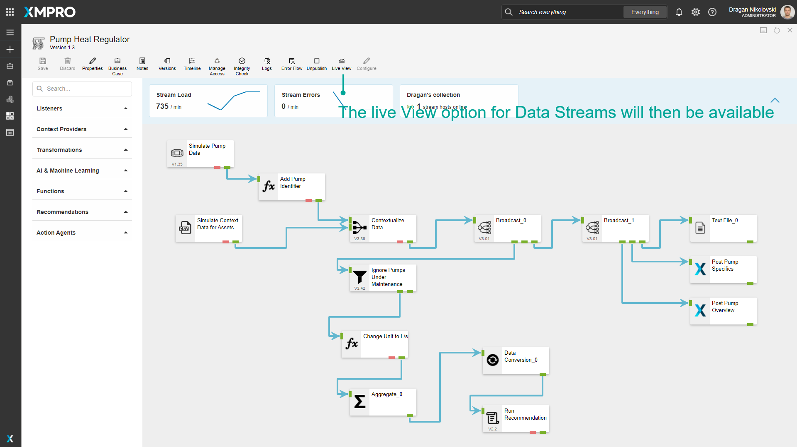
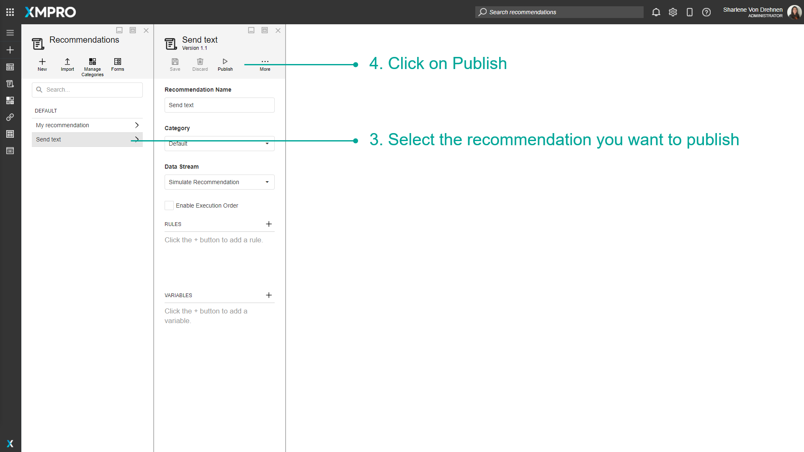
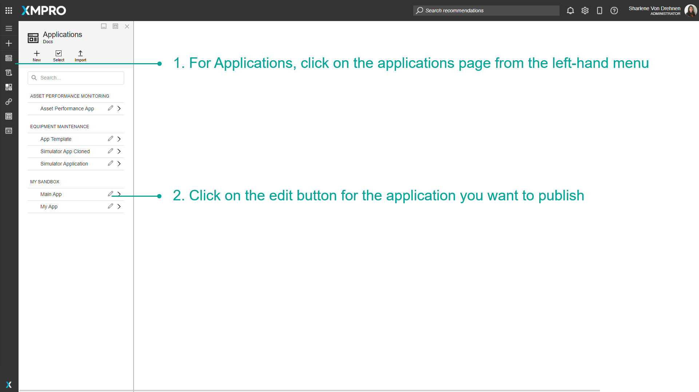
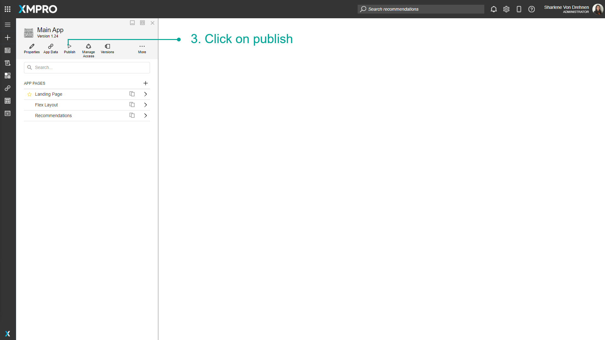
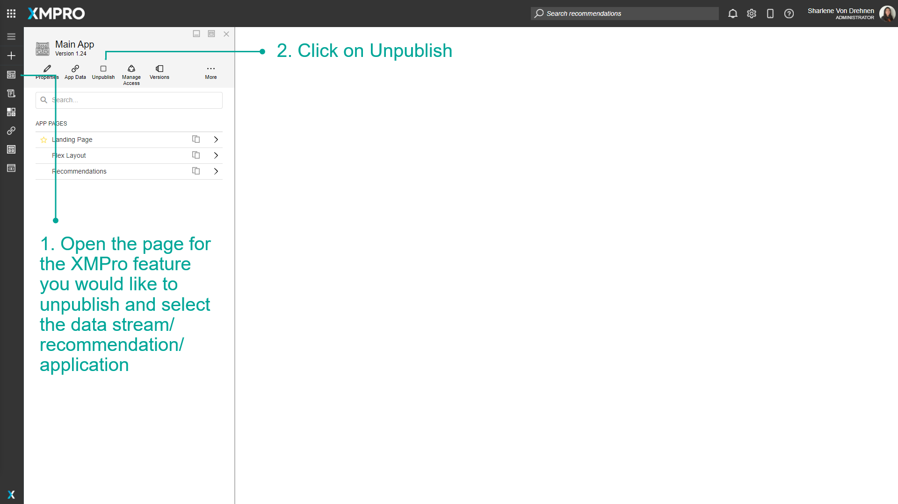

Publish
Publishing will finalize the XMPro asset and make it available for all users with Run Access. To configure the run access and who can see the asset once it is published, visit How to Manage Access. Versions of XMPro Objects that are already published cannot be edited or deleted by any user, and must be unpublished before they can be edited. Only one version of an XMPro Object can be published at a time.
How to Publish
To publish an XMPro asset, follow the steps below:
- Open the page for the XMPro asset you would like to publish and select the data stream/recommendation/application.
- Click on Publish.
Tip
The Publish button will only be available if the version you are currently viewing is not published. If another version is published clicking the button will change the published version to the current version.

Data Streams
For Data Streams, the publish option can be seen in the top menu. After publishing a Data Stream, the Live View option will become available and Stream Metrics will appear on the canvas. Visit the Use Live View article to read more about displaying data in Live View or visit the Use Stream Metrics article to read more on Stream Metrics.




Recommendations
For recommendations, click on Recommendations from the left-hand menu. In the top-right corner, click on Manage Recommendations. Select the recommendation you want to publish, then click on Publish.


Applications
For Applications, click on the applications page from the left-hand menu. Click on the edit button for the application you want to publish to open the edit page for that application. Then, click on publish.


How to Unpublish
Unpublishing is done in the same location where you publish the asset. Navigate to the same place that you published the asset.
- Open the page for the XMPro asset you would like to unpublish and select the data stream/recommendation/application.
- Click on Unpublish.
Tip
You can unpublish an XMPro Object even if you are currently viewing another version. The Unpublish button will only be available if any version of that XMPro Object is currently published. Clicking the button will unpublish the version that is published.

Last modified: May 28, 2025